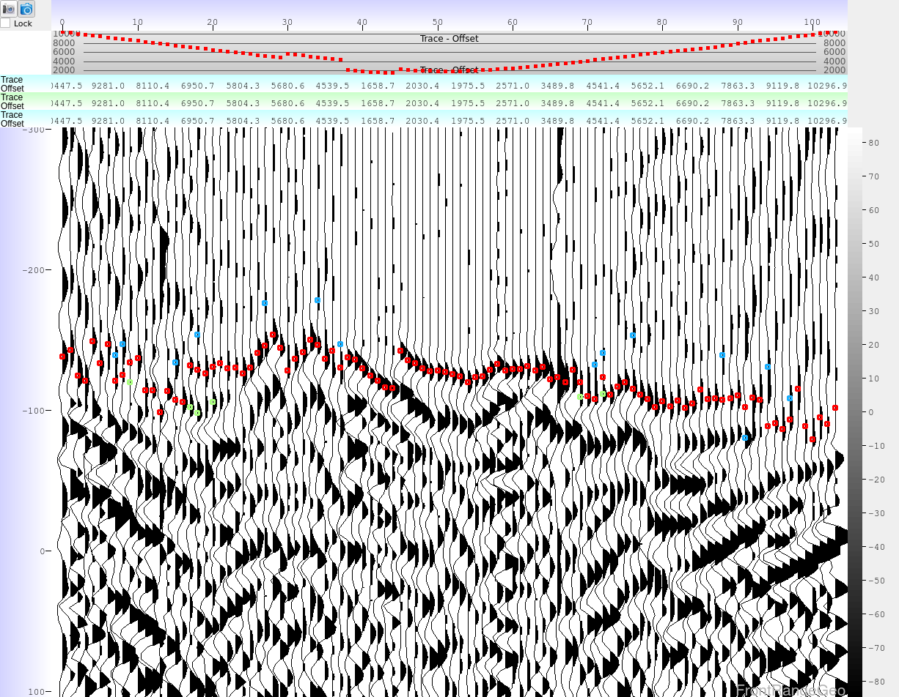
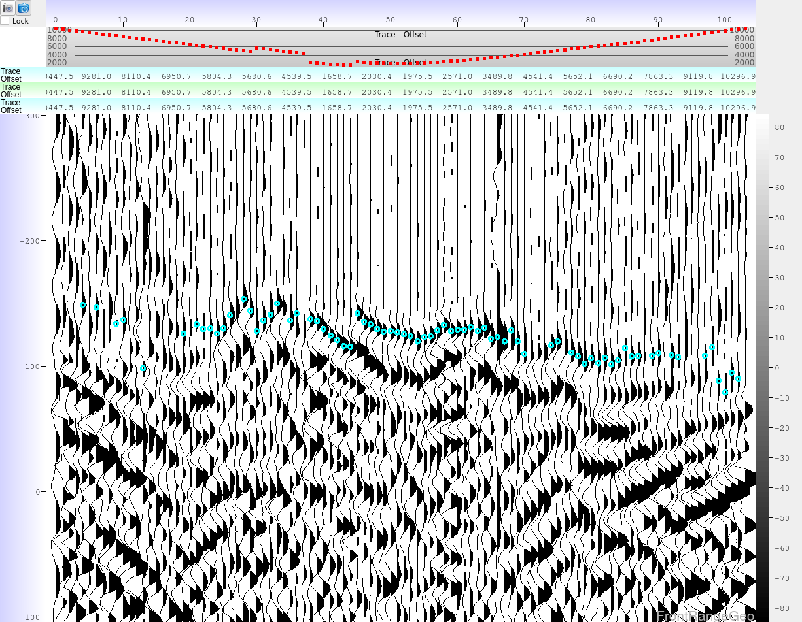

This guide covers advanced picking methods with DeepTrace which give optimal results.
DeepTrace ships with a variety of neural networks which have been trained in subtley different ways, each one producing a slightly different set of picks. One model may decide to jump down from a fading leg, while another stays longer before switching events. Just as different humans may have different opinions about which event is “correct”, different neural networks do as well.
It is a known generic result in classification with deep neural networks that ensembling the opinions from various networks increases overall accuracy. We see similar results with DeepTrace, and further use some very basic statistical analyses to increase the robustness of picking greatly.
The following image shows 3 sets of first break predictions from 3 different DeepTrace models in red, green, and blue:

We have snapped each network’s prediction to a peak, and can see that they disagree about precisely which peak to be on occasionally (note: when the picks all agree, only the red pick is displayed, the others are underneath in the display).
We would like to automatically kill picks on which the networks disagree about the precise peak. Luckily, there is a tool in Phoenix for this: Add \(\rightarrow\) Picking \(\rightarrow\) Pick averaging
The “Pick averaging” module allows you to combine multiple sets of picks into an average, and kill the resultant pick if the standard deviation is higher than some threshold. By making that threshold less than the time of one wavelet cycle, we can kill all picks where the networks disagree about the exact event to be on (note that this same methodlogy could be applied to picks which have been snapped to trough, or to energy onset).
Combining the picks in this way and setting a strong standard deviation threshold of about 8ms, we get an excellent set of picks:

Using this method of multiple DeepTrace picks, snapping to the desired event, and statistically averaging and killing picks produces consistently excellent results, and is a highly recommended way to use DeepTrace. If multiple GPUs are not available to simultaneously produce multiple sets of picks, the user should produce a single set of DeepTrace picks multiple times, saving the picks to different picking columns, and finally run the averaging at the end when all picks are available.
To review, the pick flow would look like this:
| Pick Flow Item | Module Options |
|---|---|
| Moveout Trend | Default |
| DeepTrace | Moveout Smooth Model #1 |
| DeepTrace | Moveout Smooth Model #2 |
| … | … |
| Snap to Event/Energy Onset | Peak/Trough/Energy Onset DeepTrace Picks #1 |
| Snap to Event/Energy Onset | Peak/Trough/Energy Onset DeepTrace Picks #2 |
| … | … |
| Pick Averaging | Snapped Picks #1 Snapped Picks #2 … |
Using this method, excellent picks can be achieved, even using only the “smooth” models which are not sensitive to precise events.
Note: In this video, we use AANS Tomography to move the data out, rather than a moveout trend